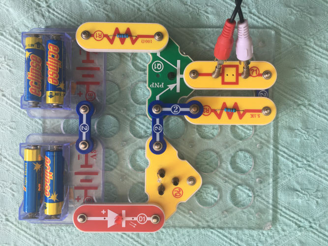
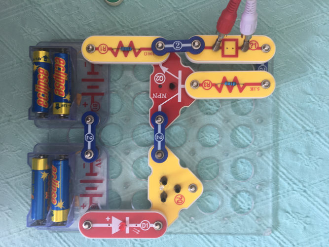

Introduction
In this blog post, I will describe the methods I used to remote control various devices by spoofing Infrared (IR) and Radio Frequency (RF) signals, i.e. a basic replay attack.
Vulnerable devices
Not all devices will be vulnerable to this style of attack, for example, modern car key fobs will use rolling codes or some more sophisticated form of attack that only lets one code be used once. However common home items such as TVs, DVD players, Fans and Lights will likely be vulnerable to this attack (but since they are not likely to get stolen from this attack, it’s not a huge security concern more than a nuisance, and most likely you could just buy the same remote from another device and use that already)
Ok, my device is vulnerable, but what’s the point of all this?
There are two main reasons for trying this attack. The first reason is to just simply learn more about hacking and replay attacks, and perhaps a bit of signal processing and electronics as well.
The other reason is that you could use this style of attack to make a non IOT device that still has a remote control into a IOT device. This blog post does not yet cover the details for that, perhaps that’s a good idea for a future post.
Required gear
When I decided to do this project, I tried to use as many common items that you might have if you are interested in electronics or similar hobbies.
You will need a computer with a microphone/line-level input (preferably one with 192 Khz and a good SNR, but you might be able to make do with 48 or 44.1 KHz). You also will need to install Audacity, or some signal processing toolset that can do the same things as in this blog post. There are two custom nyquist plugins that need to be replicated if you decide to not use Audacity.
For RF reception/transmission, A software defined radio (SDR) would make this easier, but you can use an FM radio and a raspberry pi like I did.
For IR reception/transmission, you will need an IR photodiode. Look out for photoresistors or phototransistors, as they wil NOT work well for reception, due to a slow response time, and will not transmit. If you have spare parts from an old Nintendo Wii lying around, the sensor bar has a set of photodiodes that you can use. To transmit a signal, you will need either a pre built IR blaster, or you could use a snap kit like what I used (electronics 303), or the breadboard equivalent: NPN or PNP transistor, 2 resistors, optionally a visible light LED, and a headphone connector - you can strip an old pair of headphones/earphones) for the headphones connector, I was able to just use a stereo RCA jack pushed into “?1”, which also subtracts one stereo signal from the other.
there is also the possibility to buy prebuilt devices such as the ones in this blog post by jumpjack
From the above images, you can see that one electronics kit I had advertises a component as a phototransistor, when in reality it appears as if it is a photoresistor. Either way, this component is not going to work well.
controlling the tv
This is where I started.
First thing is to record the IR signal
If you already have an IR reciever, then skip ahead to recording a signal
building a transciever
You will need an audio cable, either a stereo rca cable (for snap kits 303), or a stripped headphones cable (breadboard or snap kits) connect both stereo channel leads to each end of the connector, making sure not to connect to ground. (In a headphone cable it should be the green and red cables). What this does is give us the difference between L and R, so if transmitting, make sure to transmit with one channel out of phase with the other.
recording a signal
- Open Audacity, and plug in your reciever.
- Make sure that the correct microphone/line-level input is selected in audacity.
- Make sure the Project Rate (bottom left) is set to the same sample rate as the microphone.
- Hit record to start recording, and point the remote at the reciever, and press the desired button.
- filter out the square wave channel: look for where the remote is pressed in the signal, and find the signal that looks cleanest and most like a square wave.
- click on the triangle at the top left of the track and select “Split stereo to mono
- If wired like my transciever, both channels should look about the same but inverted, in that case invert one channel, and select both, and do “tracks -> Mix -> Mix and render” on the alt menu at the top.
- otherwise, get rid of the other channel, it will not be necessary
filtering a signal
At this point, you should now have a square wave signal on a single track. If you are lucky, you also have a sine wave embedded in that square wave signal.
- If so, all you need to do is use a band pass filter (effect -> filter curve) which only lets frequencies around 37-39 Khz through (draw a spike at 0 db in that range and a large negative number everywhere else), and then you can amplify, and hopefully send that straight through the output into an amplifier circuit to the photodiode. (remembering to pan left or invert one channel if using the L-R trick). If for some reason your sound card does not support Otherwise, perhaps you could only record at 48 or 44.1 KHz (or worse?) and all you have is a square wave.
If the square wave does not drift to the center, it should be easy enough to just turn the signle track into a stereo one: copy and paste the track, click the triangle at the top left of the upper track and choose “make stereo track”. Now you can use https://github.com/Gia90/IR-Converter You may need to pan left or split the stereo track, invert one channel and make it stereo again if you use the L-R setup for your IR transmitter.
suppose there is some DC protection happening, and the square wave drits towards the center - don’t worry, I’ve found a way to partially filter it out.
- Copy and paste the signal so that there is a copy.
- open the nyquist prompt with (“Tools” -> “Nyquist Prompt…”).
- Now paste the follwing script in:
(s-min *track* (s-min (shift-time *track* (/ -1 *sound-srate*)) (s-min (shift-time *track* (/ -2 *sound-srate*)) (s-min (shift-time *track* (/ -3 *sound-srate*)) (s-min (shift-time *track* (/ -4 *sound-srate*)) (s-min (shift-time *track* (/ -5 *sound-srate*)) (s-min (shift-time *track* (/ -6 *sound-srate*)) (s-min (shift-time *track* (/ -7 *sound-srate*)) (s-min (shift-time *track* (/ -8 *sound-srate*)) (s-min (shift-time *track* (/ -9 *sound-srate*)) (s-min (shift-time *track* (/ -10 *sound-srate*)) (s-min (shift-time *track* (/ -11 *sound-srate*)) (s-min (shift-time *track* (/ -12 *sound-srate*)) (s-min (shift-time *track* (/ -13 *sound-srate*)) (s-min (shift-time *track* (/ -14 *sound-srate*)) (s-min (shift-time *track* (/ -15 *sound-srate*)) (s-min (shift-time *track* (/ -16 *sound-srate*)) (s-min (shift-time *track* (/ -17 *sound-srate*)) (s-min (shift-time *track* (/ -18 *sound-srate*)) (s-min (shift-time *track* (/ -19 *sound-srate*)) (s-min (shift-time *track* (/ -20 *sound-srate*)) (s-min (shift-time *track* (/ 1 *sound-srate*)) (s-min (shift-time *track* (/ 2 *sound-srate*)) (s-min (shift-time *track* (/ 3 *sound-srate*)) (s-min (shift-time *track* (/ 4 *sound-srate*)) (s-min (shift-time *track* (/ 5 *sound-srate*)) (s-min (shift-time *track* (/ 6 *sound-srate*)) (s-min (shift-time *track* (/ 7 *sound-srate*)) (s-min (shift-time *track* (/ 8 *sound-srate*)) (s-min (shift-time *track* (/ 9 *sound-srate*)) (s-min (shift-time *track* (/ 10 *sound-srate*)) (s-min (shift-time *track* (/ 11 *sound-srate*)) (s-min (shift-time *track* (/ 12 *sound-srate*)) (s-min (shift-time *track* (/ 13 *sound-srate*)) (s-min (shift-time *track* (/ 14 *sound-srate*)) (s-min (shift-time *track* (/ 15 *sound-srate*)) (s-min (shift-time *track* (/ 16 *sound-srate*)) (s-min (shift-time *track* (/ 17 *sound-srate*)) (s-min (shift-time *track* (/ 18 *sound-srate*)) (s-min (shift-time *track* (/ 19 *sound-srate*)) (shift-time *track* (/ 20 *sound-srate*))))))))))))))))))))))))))))))))))))))))))
Essentially what this does is maintain the lowest part of a signal around that point for 20 samples. For longer periods of no change, this effect will need to be repeated more than once.
4. Run the script on just the lower track until there are no vertical jumps left
5. Invert the signal on the lower track and mix both tracks together
6. Now run this other script to clean up the square wave (adjusting 0.2 to be the threshold where the signal goes from on to off)
(s-min (mult (s-max (diff *track* 0.2) 0) 1000) 1)
- now you can safely run the IR-converter script (In fact, the above script can be simplified to just
(diff *track* 0.2)) or you can just use this combined script:
(mult (s-min (mult (s-max (diff *track* 0.2) 0) 100000) 1) (hzosc 19000))
playback of a signal
at this point you should have a signal composed of sine waves at 19 or 38 KHz that are turned on and off rapidly. To play this back, make sure that the signal is panned fully left or right, or depending on how the transmitter is wired, the left and right channels are inverses of each other. If you use a blaster with a battery built in, then it is not necessary to build the following circuit. If not, you may build either of the following circuits:


With my soundcard, I managed to get both 38 KHz signals and 19 KHz signals to work, however if you have a 38 KHz signal, and 38 KHz signals don’t work because the sound card filters them out (unlikely, since you probably wouldn’t have been able to record it unless you used an external ADC for your mic), then you can convert the 38 KHz signal into a 19 KHz one by a ring oscillator:
(mult *track* (hzosc 19000))
controlling RF devices
Once I was able to get the TV working, I moved on to a RF remote. Recording the sample without a SDR can be quite fiddly, but it is much easier with a SDR. I’m sure there are plenty of tutorials out there on how to use a SDR, and I don’t actually own one, so for the purpose of this tutorial, we will do without, and use a FM radio and raspberry pi (no RF transmitter header needed!).
recording the RF signal
This is arguably the most fiddly part. You need to continuously press down a button on the rf remote, while holding it close to the antenna of the radio (which could be contained inside the radio itself), and then sweep up the tuning frequencies until you hear a buzzing noise that goes away when you stop pressing the button. After finding the loudest tuning frequency, you then should try repositioning the remote until it sounds the clearest (minimal noise) and harshest (most harmonics), so that it will have as close to a pure square wave as possible. You will find that the positioning is really sensitive, with even 1mm making a big difference. You will need to find this resonant spot with the radio connected to the computer, so I recommend using the sound card to play back the radio if you don’t have another way of listening to the radio and recording at the same time (such as with an audio splitter jack), which can be done in Windows by typing “system sounds” in the search bar, going to the “Playback” tab, selecting the main output and clicking on “Properties”, clicking on the “levels” tab, and setting the level low for the right input - such as “Microphone” or “Front in”, depending on which port you used, and unmuting, and then you can adjust the level to your comfort. I recommend keeping the level lower than max on the radio itself to prevent distortion. Some sound cards do not support low latency playback, so in that case go to the “Recording” tab and select the input device, go to “Properties”, go to the “Listen” tab and click on the “Listen to this device” toggle, and make sure the right playback device is selected, and hit apply.
For my radio, connecting to the microphone input of the computer will output the signal inverted from L and R, so I was able to use the subtraction trick to filter out some noise, such as the 50KHz mains buzz. You may not get the same results with your radio. The recording procedure is simmilar to how it was recorded for IR.
filtering the RF signal
This time, we would like to leave the signal as 0s and 1s for each sample, rather than modulating it, so that rpitx can do the modulation for itself Follow the instructions from filtering a signal, until step 6 (don’t do use the IR script). Now export the audio (ctrl-shift-e or “File” -> “Export” -> “Export audio”, using the following settings: “Save as type” = “Other uncompressed files”, “Header” = “Raw (header-less)”, “Encoding” = “32-bit float”. Remember the samplerate that you export as - this is the project samplerate. I would recommend appending this to the filename to easily remember. Saving as 32-bit floats will save a conversion step when running rpitx.
installation of rpitx
make sure you have a functioning image of raspbian, preferably the latest Raspbian Lite installation. Follow the instructions on https://github.com/F5OEO/rpitx .
Illegal instruction
I would recommend running csdr after installing rpitx to make sure that it runs correctly, because on the first generation raspberry pi, the neon If after compiling you get an error running csdr that looks like “illegal instruction”, then you may have to compile without NEON - see https://github.com/ha7ilm/csdr/issues/42 .
Moving the signal to the raspberry pi
You probably want to copy the signal to the raspberry pi with a USB drive, but you might also be able to use the sd card to copy it directly.
If you want to use the USB drive, and you have raspbian lite installation, you will need to manually mount the usb drive.
To do so, make a new folder (can be whatever name) in media: sudo mkdir /media/USBDRIVE, and find the usb drive name on the system sudo fdisk -l. Generally, it should be a device like sda1 or sdb1, etc. Often I just use ls -l /dev/sd*, but that might not always work. once you have the path the the device, e.g. /dev/sda1, you can run sudo mount /dev/sda1 /media/USBDRIVE, replacing sda1 and USBDRIVE appropriately. If you want to edit the files on the mounted drive without using sudo, you should instead use sudo mount /dev/sda1 /media/USBDRIVE -o uid=pi,gid=pi (replacing as necessary).
Transmitting the RF signal
All the devices I’ve seen use ASK to encode the data stream. (In fact if they didn’t, it would be hard to actually determine the data by using a regular FM/AM radio.) So to transmit the data with rpitx, all you need to do is tell rpitx to transmit the data at the same rate as you exported it. The basic syntax of the command is as follows: cat filename.192000.f32.raw | csdr dsb_gain 4.0 | csdr dsb_fc | sudo rpitx -i - -f 433920 -s 192000. here filename.192000.f32.raw should be replaced with your file, 192000 with the samplerate that the file was exported with, and finally 433920 the radio frequency that the remote/reciever operate at - which is most likely 422290, but if that does not work, you can look at spec sheets for the oscillator in the remote if you take it apart, or perhaps look at the fccid.io listing, or listing for a similar product.